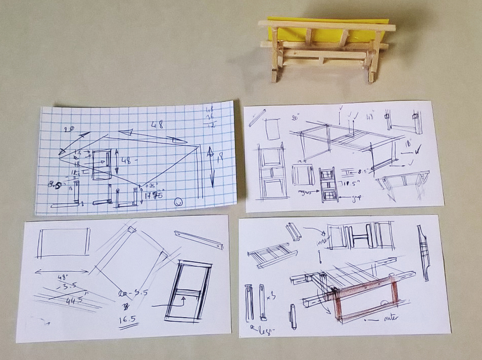

How can 3D printed joinery encourage the reuse of low-grade materials?
The T-shaped joinery system was created to fit 2"x2" and 0.75" beams or planks. Inspired by scaffolding systems, it aims to be as adaptable as possible while embracing the construction sector's existing standards. Although the joinery is 3D-printing-friendly, I intended it to be easy to replicate in other materials. The joinery was designed to leave a (red) T-shaped indication of how the lines of a piece of furniture connect to each other, as a visual framing device but also an indication of where to start disassembly (or a new arrangement of the parts). The core philosophy of the design is one that hopes to celebrate ad hoc fabrication culture and playful invention. The [ T ] system hopes to be and invitation to hack rather than a prescriptive template to follow.
There is something I enjoy about the idea that your furniture can accompany you in very different ways when traveling or moving: of course you could take the furniture with you but you could also choose to only carry the joinery that held their furniture together but leave the raw material behind for someone else to use. While working on this project I used the same parts to create a couple bookshelves (including one that used an old Billy bookshelf for planks), chairs, and a bed frame.
[ T ] is a 3D-printed joinery design created to encourage the reuse of low-grade construction materials.

The [ T ] joinery system aims to be a more adaptable, open-ended, adaptation of the DIY-flavored consumerism companies like IKEA have helped popularize.
Because I was working within a very limited space and with even more limiting resources of time and funds when first designing the system, a lot of the "system" aspect of the project had to be done virtually or at a much smaller scale. The first design I used the joinery on was an elevated rack. I still find these little guys have a lot of charm and hope I can revisit the project one day!
Digital renders of possible [ T ] furniture designs.
Possible hacks of the final [ T ] chair design.
The [ T ] joinery system is fully open source. This means the 3D-printable files are available here on my Thingiverse account and that the PDF blueprint to the chair design can be downloaded here. The shelf was all improvised so no blueprint there, but I'm sure yours will be even better.
Please email me if you've made anything with the files here, I'd really appreciate it.
[ T ] is an opensource project, please use, share, but credit!